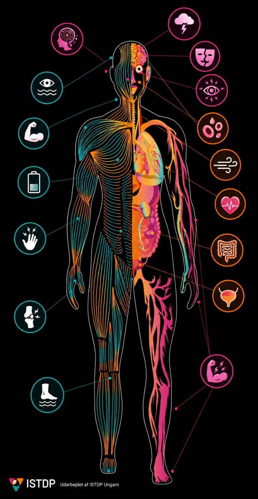

ANGST
KROPPENS
REAKTIONER
ⓘ Om angst

Tryk på et ikon for at læse mere.
Kognitiv / sanse
Sanser, hukommelse og dissociation
›
Glatte muskulaturer
Organer og autonome reaktioner
›
Tværstribede muskler
Spænding, vejrtrækning og uro
›